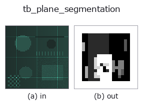

typed op• 資料種類:points → volume
• 呼叫:fullseye.apply(img, "tb_plane_segmentation", a=0.5, b=0.5)(2-D 的模型是一張圖 + 兩個純量旋鈕 a,b∈[0,1])

*圖為在 128×128 合成輸入上實際執行的輸出。左為輸入，右為輸出。點雲以俯視散點顯示(亮度 = z)，一維序列為折線，體資料為沿 z 的最大值投影，影片為中間影格，複數影像為振幅；無法成像的回傳值直接顯示數值。*
掃描旋鈕 a(0.1 / 0.5 / 0.9，另一旋鈕取預設):
▸ tb_plane_segmentation: knob a sweep (docs site)
掃描旋鈕 b(0.1 / 0.5 / 0.9，另一旋鈕取預設):
▸ tb_plane_segmentation: knob b sweep (docs site)
階段(前置運算子 → 本運算子，由左至右):
▸ tb_plane_segmentation: stages (docs site)
換別的影像(合成場景 / 照片 / 硬幣。上排為輸入，下排為對應輸出。旋鈕取預設):
▸ tb_plane_segmentation: other inputs (docs site)
動態(GIF: 依序顯示影格 / 視點 / 切片。靜態圖是完整版，GIF 為輔助):
透過迭代 RANSAC 依序擷取最多 max_planes 個平面（剩餘殘差點標為 -1）。
> 以下的詳細說明為原文 —— 摘要與標題已翻譯。
残り点集合に :func:ransac_fit.ransac_plane を掛け、その最大 consensus 平面の
inlier 数が `min_inliers` 以上なら新ラベルを与えて除去 → 残りで再検出、を繰り返す。
複数の床/壁/階段状の面を一度に分離する(単一平面適合の pcseg との差)。inlier が
`min_inliers` に満たなくなった時点で停止し、以降の点は残差 -1(球や複雑物体はここに残る)。
Args:
points: (N,3) 点群。
thresh: 点-平面距離の inlier しきい値(距離、要 > 0)。
min_inliers: 平面として採用する最小 inlier 数(要 >= 3)。
max_planes: 抽出する平面の最大枚数(要 >= 1)。
iters: 各 RANSAC 反復数。
seed: 乱数シード(決定論。各平面で seed+平面index を使う)。
Returns:
labels: (N,) int。検出順(=consensus 大きい順に近い)に 0,1,2,... を平面へ付与、
どの平面にも属さない残差点は -1。空入力は shape (0,)。
2-D 進化レジストリへ橋渡しした 3d の op `plane_segmentation。実装は同じで、呼び出し規約だけ op(v, a, b) に合わせてある。a が max_planes(既定 5)、b が iters`(既定 300)を振る。
• 範例資料目錄(下載 URL / 授權) —— 2-D 用 skimage.data(BSD/公有領域)加合成圖,3-D 給出真實資料源(Stanford/PDS 等)的下載 URL。
• 運算子來歷與參考文獻 —— 該運算子族所依據的研究/方法出處。
下面的程式已確認可以執行(與圖相同的輸入)。在 Studio 說明中，此區塊會變成按鈕，可當場載入並執行。
img_to_points 0.50 0.50 tb_plane_segmentation 0.50 0.50
▸ Load this pipeline · Load & run
下面的範例呼叫的是底層帳本運算子 plane_segmentation。此橋接運算子只是把同一實作適配為 fn(v, a, b) 慣例，行為完全相同(只是呼叫形式不同)。
• object_segmentation — py -3.11 examples_3d/object_segmentation.py
volume 作為輸入)identity · vol_gaussian · vol_median · vol_erode · vol_dilate · vol_threshold · vol_reg_dilate · vol_reg_erode
typed)tb_points_to_voxel · tb_estimate_point_normals · tb_iss_keypoints · tb_project_points · tb_render_point_depth · tb_statistical_outlier_removal · tb_radius_outlier_removal · tb_voxel_grid_downsample
*Provenance: ops.py — 2D 運算子登記表。本條目由 tools/opdocs.py md 自動產生(請勿手動編輯)。*
© 2026 Kazufumi Furuse — Fullseye operator documentation. Licensed under Apache-2.0.
{kind=link}
{kind=link}
{kind=link}
{kind=link}